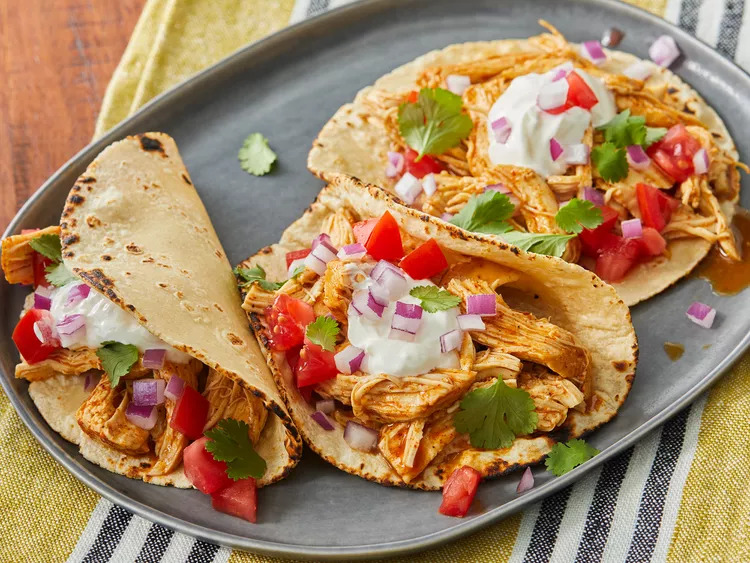

Back
Chicken Tacos

Switch up Taco Tuesday and try these simple and super delicious Slow Cooker Fiesta Chicken Tacos for dinner. Perfectly shredded chicken, black beans, corn, salsa, and chicken taco seasoning is all it takes to get this family favorite dinner on the table.
ingredients
- 1 cup chicken broth
- 3 tablespoons taco seasoning mix
- 3 tablespoons taco seasoning mix
Steps
- Combine chicken broth and taco seasoning mix in a bowl.
- Place chicken in a slow cooker. Pour chicken broth mixture over chicken.
- Cook on Low for 6 to 8 hours. Shred chicken.